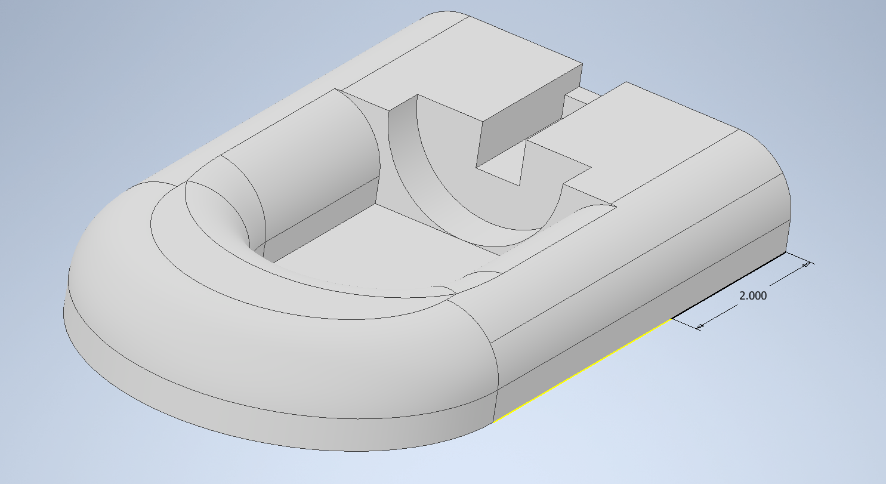
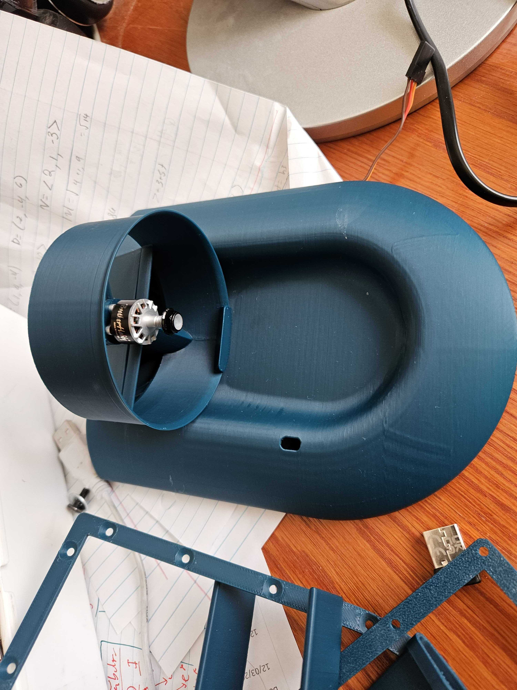
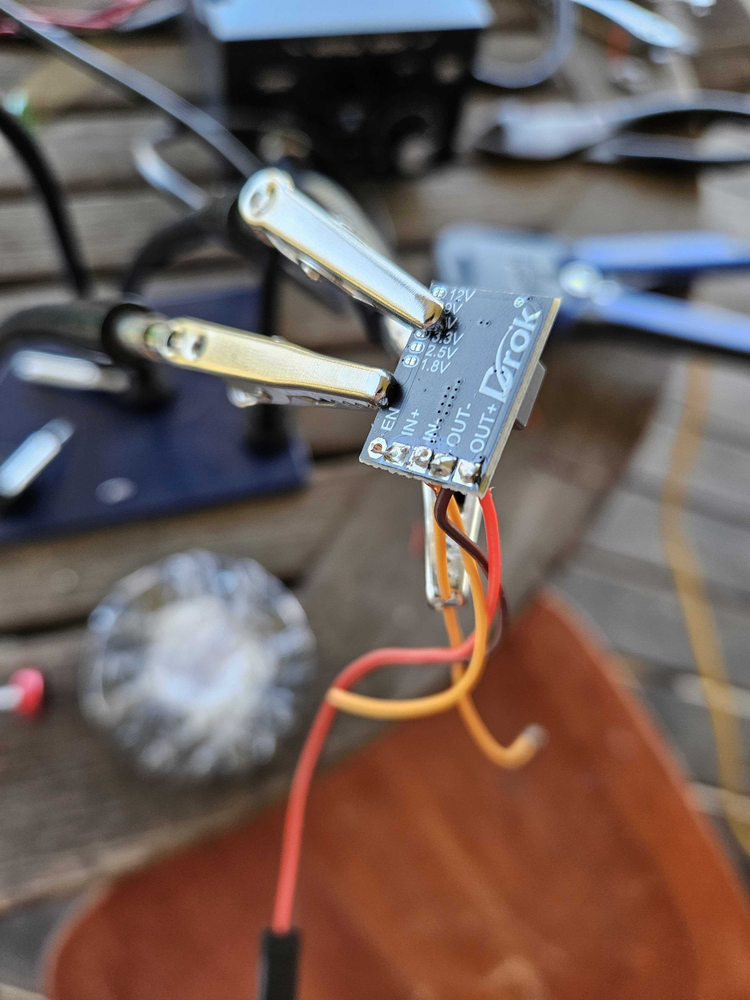
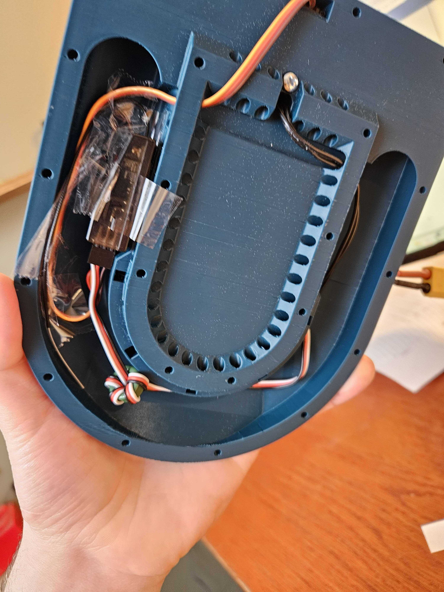

RC Hovercraft
The Project
I have wanted to build a remote control project for a while but every time i looked into it a got overwhelmed by the learning curve that comes with the “RC” world. However one day I found a video online of of a guy who had made a 3D printed RC hovercraft. I have been doing a lot with 3D printing lately and having recently been practicing my CAD and soldering skills through my robots club I decided now would be a great time to give the RC thing another shot. And with spring break coming up I would have the free time to give the project the proper attention
The Proposal
Although I originally wanted to do everything for the project myself after starting to CAD the craft and diving back into the RC components world I realized it would be better for my first time to follow along to a guide I had found online which included a high level component list and a 3D craft model. (Though I would end up changing some parts out later on). The main features of the design is that it uses the same motor for lift as it does for forward proposition. It has ducts on the back that channel the air underneath it into a skirt that fills with air lifting it off the ground.
The Process
I started by printing out the model and ordering the electronics for the hovercraft. Once the parts came in. I mounted the servo and turbine motors to the craft and ran there wires to the underside of the body I soldered the ESC (electronics speed controller) to the battery and a 5V regulator whose leads were soldered to the receiver. However on first testing the receiver got power and the servo was able to be controlled via the transmitter but the turbine motor did not move. I isolated the problem down to the ESC and bought a different one that ended up working, however its size was larger than the design of the craft was made for so I ended up rewiring it and mounting it on top of the craft body. With the new ESC the motor was able to spin up. (Yay!). Then I did the final piece which was the skirt. Using a paper template I cut out a plastic skirt from a trash bag and used 2 3D printed clamps to hold it against the underside of the craft. It took a few tries to get it lined up properly but it finally got to a working place.
The Product
The hovercraft it a lot of fun to drift around hardwood. It does struggle with bumps but I think a larger skit should help.
The Possible
 If I were to do this project again there are a few changes I'd make. Now that I know more about RC electronics, transmitters and receivers. I would spend more time designing the craft myself in CAD. I would include a second motor to separate the lift from the proposition. Although it worked I feel it struggles to get the downward thrust it needs to get over bumps and things. I would also include a larger mounting space for the ESC so that the battery can be better secured on top, as it is now the battery falls off a lot.
Overall I'm very pleased with how this project turned out and I hope to do more with RC in the future, possibly making a quadcopter drone in the future.
If I were to do this project again there are a few changes I'd make. Now that I know more about RC electronics, transmitters and receivers. I would spend more time designing the craft myself in CAD. I would include a second motor to separate the lift from the proposition. Although it worked I feel it struggles to get the downward thrust it needs to get over bumps and things. I would also include a larger mounting space for the ESC so that the battery can be better secured on top, as it is now the battery falls off a lot.
Overall I'm very pleased with how this project turned out and I hope to do more with RC in the future, possibly making a quadcopter drone in the future.